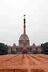
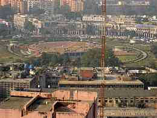

|
|
British administrative offices

Sansad Bhavan or the Parliament of India
Sansad Bhavan or the Parliament of India is a circular building designed by the British architects Sir Edwin Lutyens and Sir Herbert Baker in 1912–1913. Construction began in 1921, and in 1927 the building was opened as the home of the Council of State, the Central Legislative Assembly, and the Chamber of Princes.

Rashtrapati Bhavan
Built with a mix of European and Mughal/Indian styles, Rashtrapati Bhavan was originally built for the Governor General of India. Inaugurated in 1931 as the Viceregal Lodge, the name was changed in 1959 after India became a republic. Now it is the Presidential Palace of India.

Connaught Place
Connaught Place is known for its vibrant atmosphere and planned layout. It has been the hot-spot both for the business men as well as tourists both from the country and abroad. The present day Connaught Place plays the role of a welcoming host to the continuous down stepping of huge masses who are attracted to the popular tourist destinations here. Some must places to be visited are Hanuman Mandir, an ancient temple with a mention in Guinness Book of Record, Jantar Mantar, an astronomical observatory of 18th century, Maharaja Agrasen ki Baoli and State Emporiums with the collection of ethnic specialties of the states.
Connaught Place is a planned street meant for business with a circular area that is divided into two circles named as inner and outer Connaught circle. Janpath, an open-air shopping complex, lies on the road connecting the inner and outer circle with Palika-Baazar which is known to be the trend-setter of India's underground markets accompanying it.
Connaught Place invites one to its luxurious hotels where a variety of spa facilities are available. The soothing aura and the eye pleasing ambience of 3 stars, 4 stars and 5 stars hotels attract the tourists towards itself. One can find 3 star hotels like The Chorus and Hotel Palace Heights, 4 star hotels like Radisson Blue Marina Connaught Place and The Hans Hotel and The Lalit in the category of 5 star hotels in and around Connaught Place.
go to top
Home
Developed by SUGATO CHAKRABORTY (currently pursuing B.Tech in CSE from West Bengal University of Technology, developer at Boscom Software,2014)
|
|